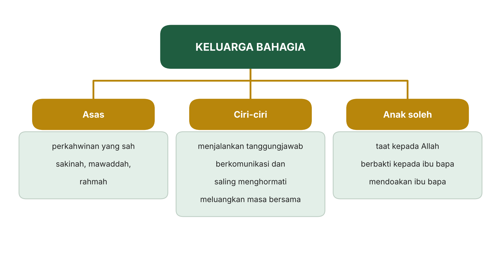

Pelajaranบทที่
Peta Minda
ผังความคิดจากบทความ
- อก.3/2
- อก.3/8
Teks bacaanบทอ่าน
Keluarga Bahagia
Keluarga ialah asas pembinaan masyarakat. Dalam Islam, keluarga bermula dengan perkahwinan yang sah. Perkahwinan bertujuan untuk membina keluarga yang sakinah, mawaddah dan rahmah, iaitu keluarga yang tenang, penuh kasih sayang dan belas kasihan.
Keluarga bahagia mempunyai beberapa ciri. Pertama, setiap ahli keluarga menjalankan tanggungjawab masing-masing. Bapa mencari nafkah dan memimpin keluarga, manakala ibu mendidik dan menjaga anak-anak. Kedua, ahli keluarga sentiasa berkomunikasi dengan baik dan saling menghormati. Ketiga, mereka meluangkan masa bersama-sama, misalnya solat berjemaah dan makan bersama.
Anak soleh pula ialah anak yang taat kepada Allah dan berbakti kepada ibu bapa. Anak soleh mendoakan ibu bapanya, membantu kerja rumah dan bercakap dengan sopan. Doa anak yang soleh ialah salah satu amalan yang pahalanya berterusan walaupun ibu bapa telah meninggal dunia.
Kesimpulannya, keluarga bahagia tidak terbina dengan sendiri. Setiap ahli keluarga mesti berusaha untuk mewujudkannya.
| # | Bahasa Melayu | Maksudความหมาย |
|---|---|---|
| 1 | asas | พื้นฐาน รากฐาน |
| 2 | perkahwinan | การแต่งงาน |
| 3 | sakinah | ความสงบสุข |
| 4 | mawaddah | ความรัก |
| 5 | rahmah | ความเมตตา |
| 6 | tanggungjawab | ความรับผิดชอบ |
| 7 | nafkah | ค่าเลี้ยงดู |
| 8 | berkomunikasi | สื่อสาร |
| 9 | meluangkan masa | สละเวลา |
| 10 | anak soleh | ลูกที่ดี (ศอลิห์) |
| 11 | berbakti | กตัญญู ทำความดีต่อ |
| 12 | berterusan | ต่อเนื่อง |
Peta mindaผังความคิด
Peta minda membantu merumuskan idea utama dan idea sokongan serta menunjukkan hubungan antara idea dengan jelas.ผังความคิดช่วยสรุป idea utama (ใจความหลัก) และ idea sokongan (ใจความสนับสนุน) ให้เห็นความสัมพันธ์ได้ชัดเจน

Latihanแบบฝึกหัด
Jawab soalan berdasarkan teks bacaan.ตอบคำถามจากบทอ่าน
- Apakah tujuan perkahwinan dalam Islam?
- Nyatakan tanggungjawab bapa dan ibu.
- Nyatakan tiga ciri anak soleh.
Lihat jawapanดูเฉลย
Membina keluarga yang sakinah, mawaddah dan rahmah; bapa mencari nafkah dan memimpin keluarga, ibu mendidik dan menjaga anak-anak; taat kepada Allah, berbakti kepada ibu bapa, mendoakan ibu bapa (atau membantu kerja rumah, bercakap dengan sopan)
Lengkapkan peta minda "Anak Soleh".เติมผังความคิดเรื่อง "Anak Soleh" ให้สมบูรณ์
- Taat kepada
- Berbakti kepada
- Membantu
- Bercakap dengan
Lihat jawapanดูเฉลย
Allah, ibu bapa, kerja rumah, sopan
Pada pendapat anda, apakah cabaran keluarga pada hari ini? (Tulis tiga ayat.)Pada pendapat anda, apakah cabaran keluarga pada hari ini? (เขียน 3 ประโยค)
Lukis peta minda "Cara-cara Menghormati Ibu Bapa" dengan sekurang-kurangnya tiga cabang.วาดผังความคิดเรื่อง "Cara-cara Menghormati Ibu Bapa" อย่างน้อย 3 กิ่ง
Kuiz Kendiriทดสอบตนเอง
Pilih maksud yang betul. Kuiz boleh diulang; soalan dipilih secara rawak setiap kali.เลือกความหมายที่ถูกต้อง ทำซ้ำได้หลายรอบ ข้อจะสุ่มใหม่ทุกครั้ง
Kad Imbasบัตรคำ
Sentuh kad untuk melihat maksudแตะบัตรเพื่อพลิกดูความหมาย